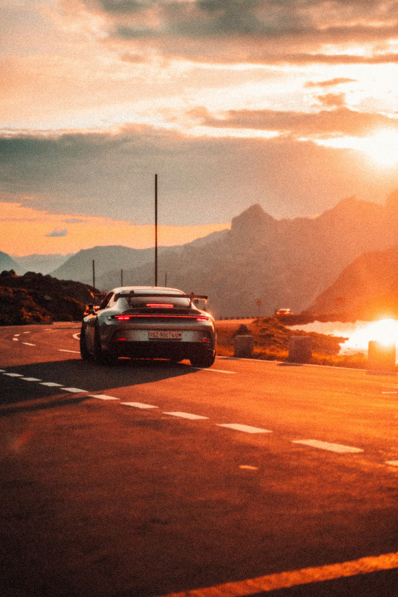
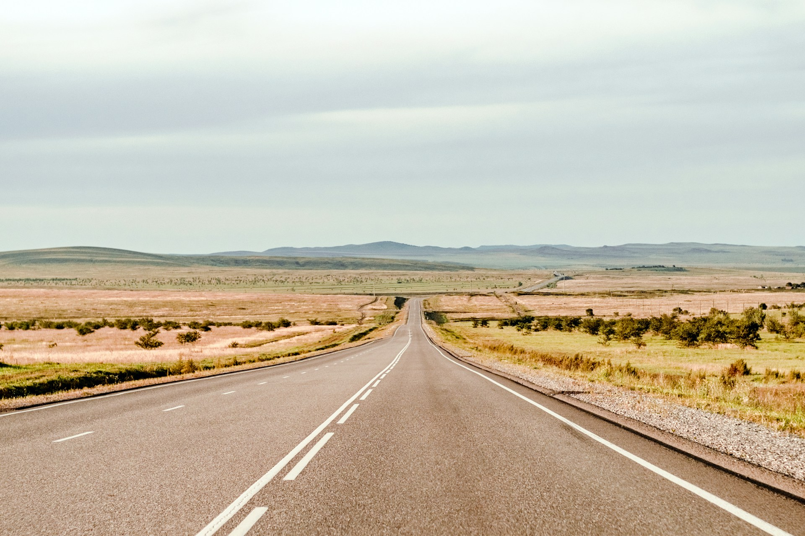
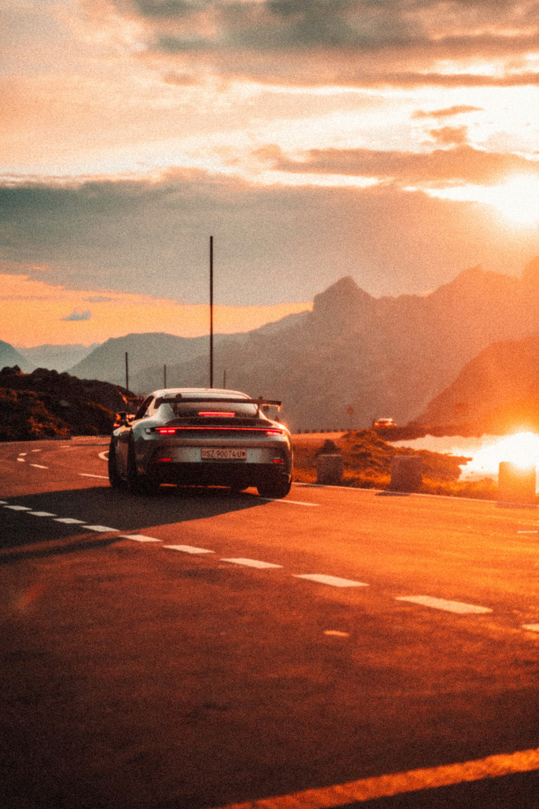
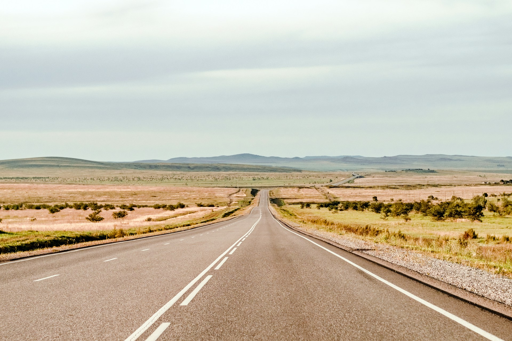
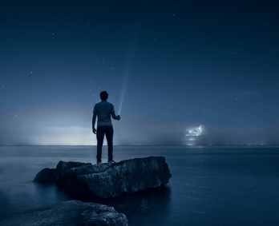
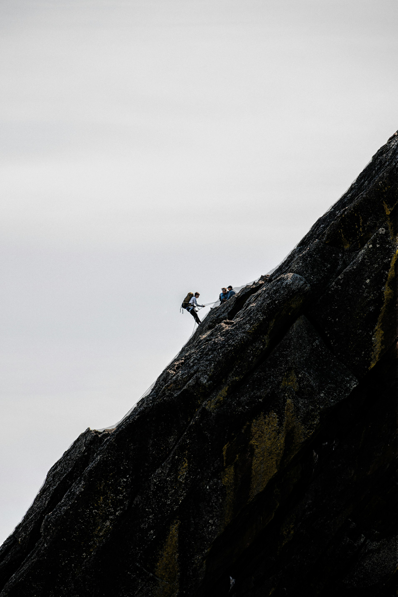
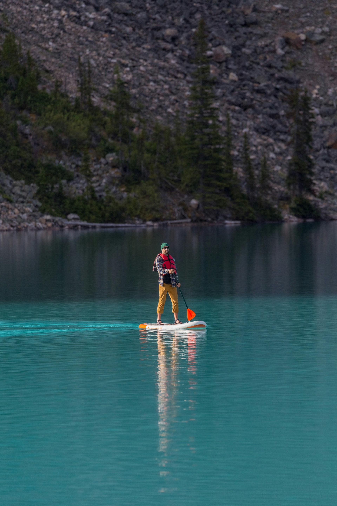

Meus Projetos Fotográficos
Uma Coleção de Histórias Visuais
Cada fotografia aqui representa um momento, uma emoção ou uma paisagem que tive o privilégio de capturar. Navegue pelas minhas galerias para explorar a diversidade dos meus projetos, desde retratos íntimos e eventos vibrantes até a grandiosidade de paisagens e a essência da vida selvagem. Meu objetivo é que cada imagem conte uma história e transporte você para aquele instante.
 



Viagens Incríveis


